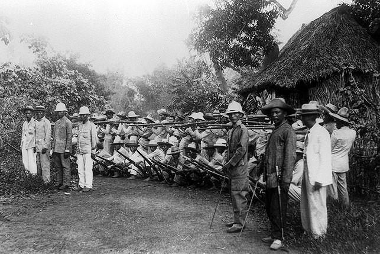
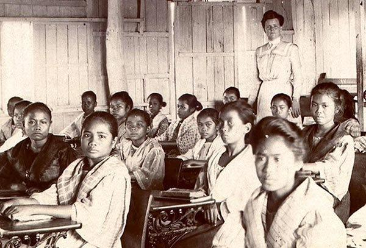
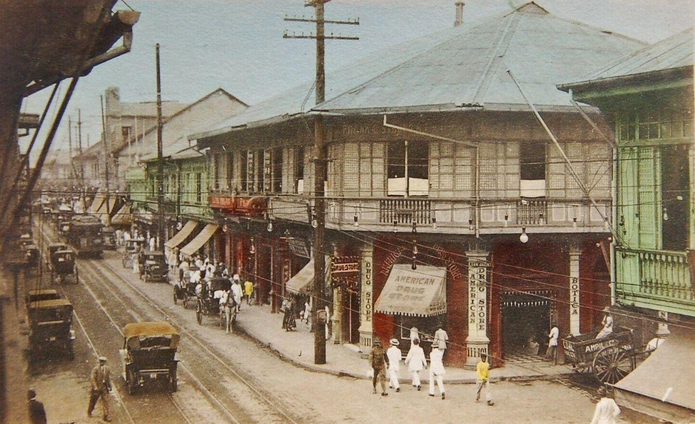

American Period 1898-1946



After the Spanish-American War, Spain surrendered control of the Philippines to the United States in 1898. American rule introduced several changes to Philippine society.
Important Facts:
- The American education system was introduced.
- English became widely used in schools and government.
- Public schools were established.
- Infrastructure and transportation developed.
- The Philippines gained greater self-government through the Commonwealth in 1935.